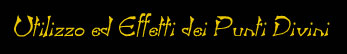
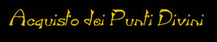

I Punti Divini sono dei punti speciali che i personaggi possono utilizzare in situazioni particolarmente gravi e pericolose. Sono stati inseriti per ridurre il rischio che un personaggio muoia per un unico tiro sfortunato e per temperare, quindi, la difficoltà di un mondo ad alto realismo come il mondo di Arelia. I punti divini simulano l'intervento delle divinità e per questo motivo seguono alcune regole particolari connesse alla natura divina dell'aiuto.

Attraverso l'utilizzo di un Punto Divino un personaggio può ritirare un qualsiasi dado egli abbia dovuto tirare nel corso della seduta di gioco. Deve trattarsi di un tiro del personaggio. Il personaggio deve decidere di utilizzare il Punto Divino subito dopo aver tirato il dado anche se non conosce in modo preciso gli effetti che avrebbe sortito il suo tiro, non è possibile infatti l'utilizzo dei Punti Divini retroattivamente. Sebbene un personaggio può avere a disposizione più Punti Divini non è possibile utilizzare più di 1 Punto Divino ogni 24 ore. Nelle zone sacre, attive, di una divinità possono utilizzare i Punti Divini esclusivamente i fedeli e membri del culto di quella specifica divinità, a tutti gli altri non è concesso l'utilizzo dei Punti Divini. Una volta utilizzato il Punto Divino è definitivamente perso, è infatti possibile acquisire nuovi Punti Divini e, nel caso, cumularli ma non è possibile recuperare i Punti Divini utilizzati.

I Punti Divini si acquisiscono fondamentalmente in tre modi :
1) Punti divini di partenza : ogni personaggio appena creato ottiene 1 Punto divino + 1 Punto divino supplementare per valore del bonus (solo in positivo) del Reaction Adjustment del Carisma.
2)
Punti divini del
potere : per ogni
livello che un personaggio supera (effettuando il regolare training) costui
ottiene 1 punto divino.
I personaggi con un valore di
Carisma pari a 13 o
superiore, hanno
una percentuale pari al triplo del loro
Carisma di ottenere ad
ogni nuovo livello 1 Punto divino del potere supplementare.
I personaggi, invece, con un
malus al reaction adjustment
del Carisma
avranno al superamento di ogni livello di esperienza una percentuale pari al 10%
+ 10% moltiplicato per il valore del malus posseduto di non ottenere alcun punto
divino al superamento di detto livello di esperienza.
3)
Punti divini
della fede :
questi punti divini sono concessi a quei personaggi che donano alle loro
divinità molto potere diretto.
In particolare gli appartenenti alle classi chierici e paladini, che abbiano seguito i dettami delle divinità correttamente (a descrizione del DM), ottengono 1 Punto Divino supplementare una volta che abbiano raggiunto i livelli di esperienza : 3°, 6°, 9°, 12°, 15°, 18° e 20°.
Inoltre i fedeli e i membri di culto di una divinità possono ottenere altri Punti divini della fede in determinate occasioni speciali (per aver svolto ad esempio una missione per la divinità, per aver seguito i dettami del culto in maniera particolarmente rigorosa, per aver effettuato dei riti particolarmente buoni), comunque non è possibile ottenere più di un Punto Divino, che sia dovuto a queste occasioni speciali, per livello di esperienza.
Per calcolare i Punti Divini dei personaggi creati a livello superiori al 1° e dei personaggi non giocanti (si badi che ottengono i punti divini solo gli appartenenti ad una classe di personaggi, mentre le creature mostruose che non abbiano livelli in nessuna classe non ottengono punti divini, ad eccezione dei Draghi che sono considerati personaggi di livello pari alla loro categoria di età) si consideri il loro livello di esperienza e si calcoli l'ammontare massimo dei Punti Divini che sarebbe loro spettato.
A questo punto si tiri un dado da 10 con una penalità di -1 (senza penalità per i p.n.g i quali potrebbero già aver speso tutti i Punti Divini). Il risultato del tiro moltiplicato per 10 rappresenta la percentuale di Punti Divini (si arrotonda a favore del mantenimento di Punti Divini) che il personaggio ha già speso fino a quel momento nella sua vita. Tutti i Punti Divini restanti saranno stati accumulati dal personaggio fino a quel momento.